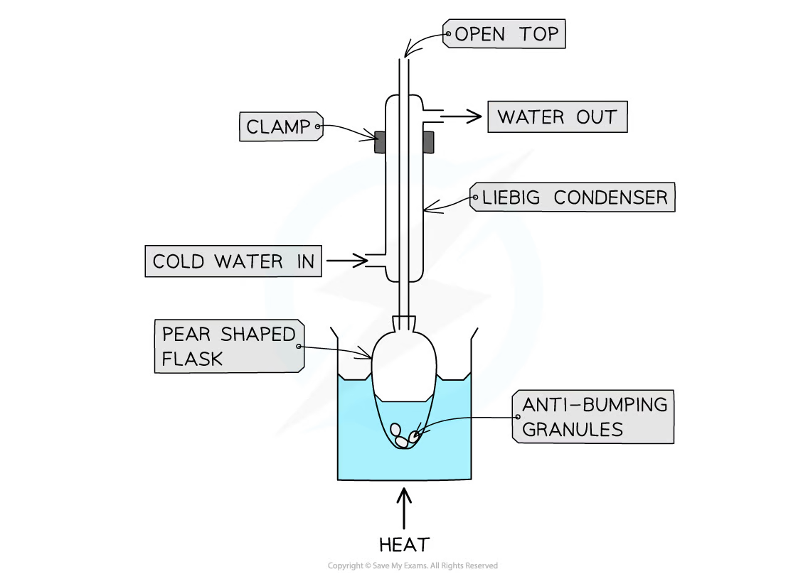
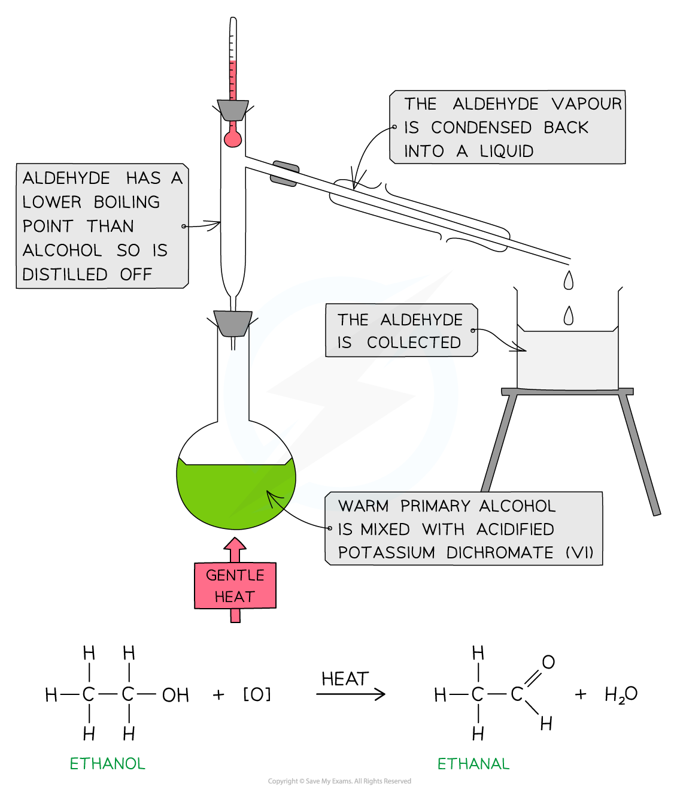
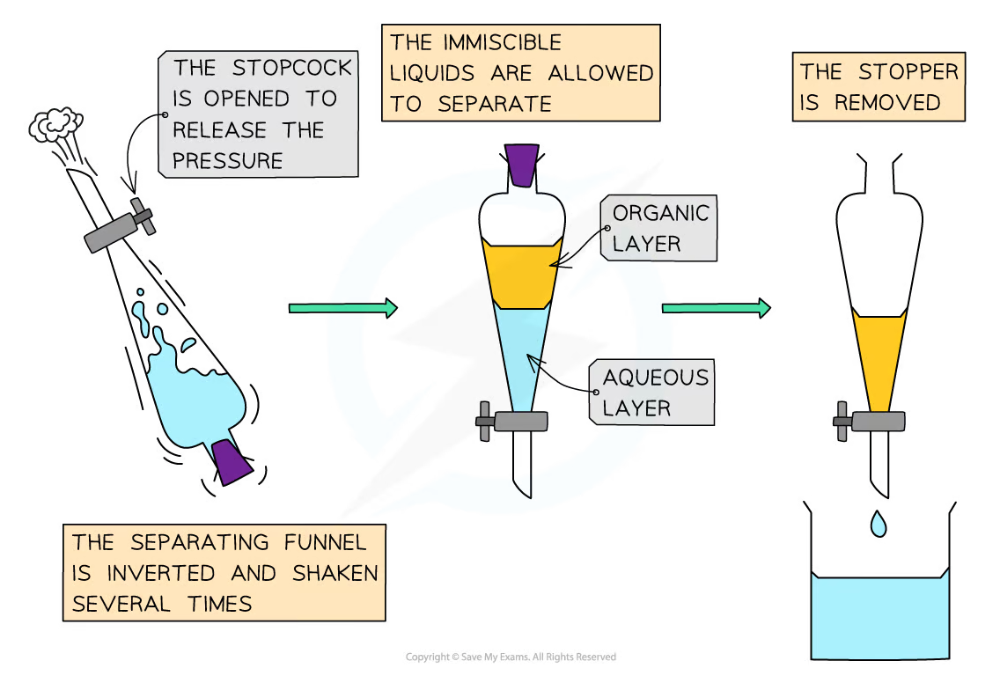
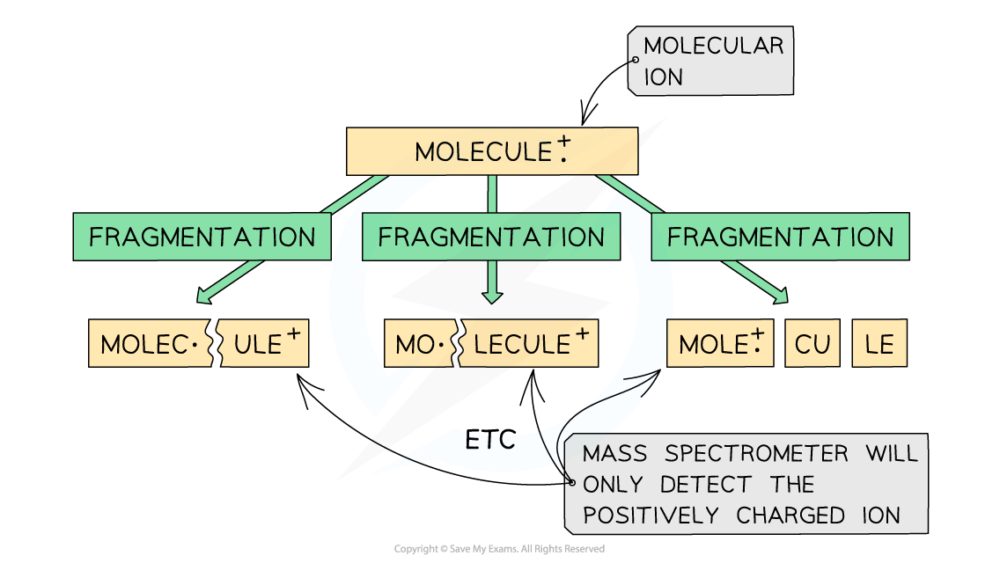
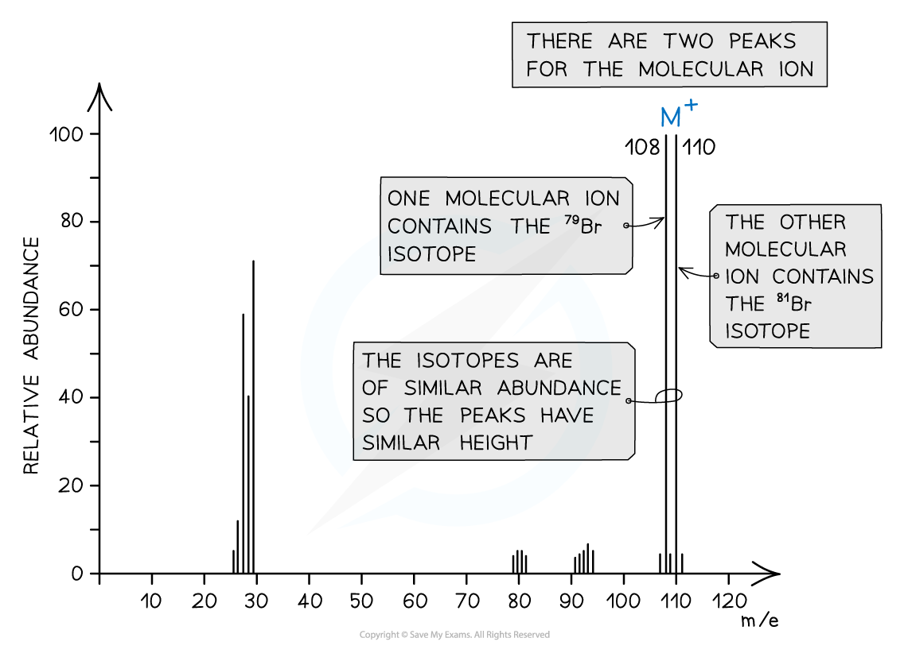
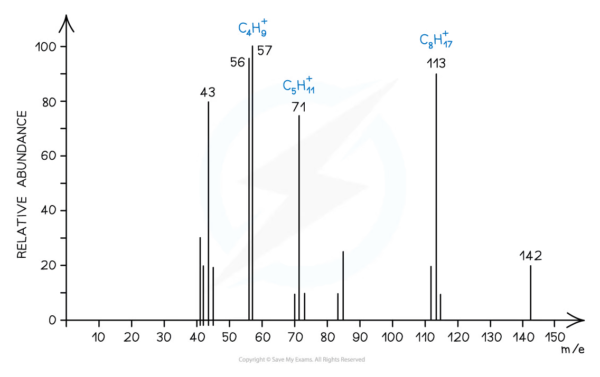
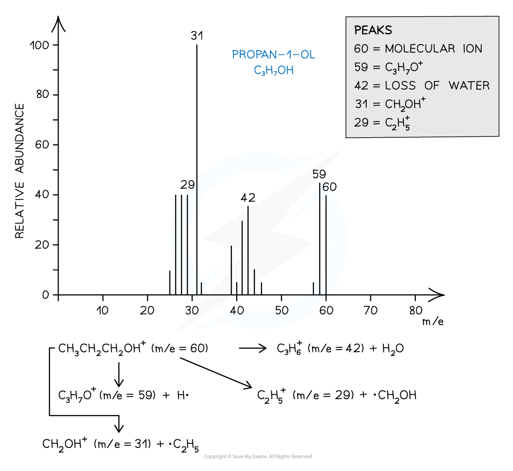
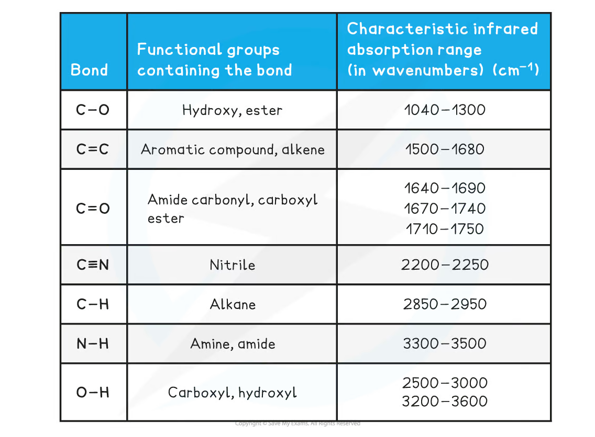
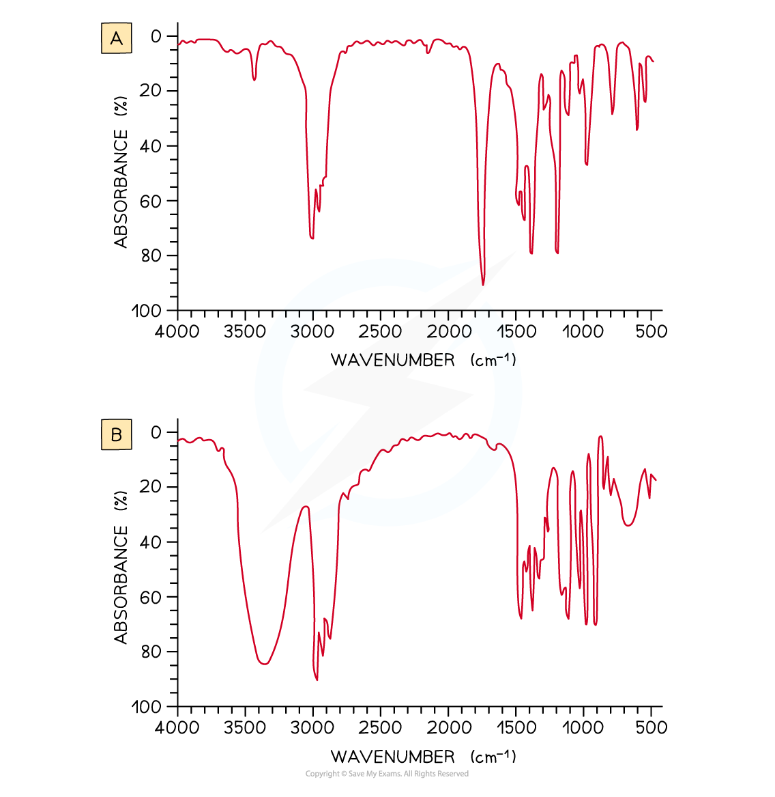

2.10 Organic Chemistry Techniques - Spectra
Reflux, distillation, extraction, mass spectrometry and IR
2.10 Organic Chemistry Techniques - Spectra
本页对应 2.10 Organic Chemistry Techniques - Spectra.pdf.pdf。内容包括 organic practical techniques、mass spectrometry interpretation 和 infrared spectrometry。专业词汇保留 English，重点掌握 apparatus、m/z、fragmentation、isotope patterns、IR wavenumber 和 functional-group identification。
Learning objectives
- explain why reflux is used and distinguish it from distillation；
- use boiling point to assess identity and purity；
- separate organic products by separating funnel and drying agents；
- interpret molecular ion、base peak、fragment peaks、
M+1and isotope patterns； - use mass spectra to deduce molecular mass and possible fragments；
- identify functional groups from characteristic IR absorptions。
2.10.1 Organic chemistry techniques
Heating under reflux
Reflux allows a slow organic reaction to be heated so it proceeds as fully as possible while volatile reactants、solvent and products remain in the flask。Vapour rises into a vertical condenser，is cooled，and returns to the reaction mixture。
Typical applications：
- oxidising a primary alcohol fully to a carboxylic acid；
- oxidising a secondary alcohol to a ketone；
- esterification with an acid catalyst。
Apparatus and method：
- place reaction mixture in a pear-shaped or round-bottomed flask；
- add anti-bumping granules before heating；
- attach a vertical water-cooled condenser；
- water enters at the bottom and leaves at the top；
- heat using a water bath or electric heating mantle，not a naked flame when flammable liquids are present；
- cool before dismantling the apparatus。

The top of the condenser remains open to the atmosphere，so pressure does not build up。Condenser water flows opposite to vapour movement，maximising cooling。
Distillation
Distillation separates compounds using different boiling points。The compound with the lower boiling point vaporises and distils first；its vapour condenses in the condenser and is collected in the receiver。
Distillation is used when：
- a reaction mixture contains a desired product and unreacted starting material；
- a primary alcohol must be oxidised only to an aldehyde；
- a product must be separated from another liquid；
- boiling point is being measured to assess identity / purity。
For aldehyde preparation，the warm primary alcohol is added to acidified potassium dichromate(VI)，and the aldehyde is distilled off immediately because it has a lower boiling point than the alcohol and can otherwise oxidise further。

Collect the fraction within approximately ±2 °C of the expected boiling point。Discard early fraction if it contains more volatile impurities，and stop collection when the temperature rises above the desired range。
Boiling point determination
Boiling point can indicate identity and purity：
- compare measured value with a reliable literature / database value；
- pure liquid tends to boil at a narrow temperature；
- impurities may increase the observed boiling point and broaden the boiling range。
Use controlled heating，appropriate thermometer placement and a suitable receiving vessel。
Solvent extraction and separating funnel
Organic synthesis often produces an organic layer containing water and inorganic impurities。A separating funnel separates immiscible liquids according to density and solubility。
Method：
- transfer mixture to the separating funnel and insert stopper；
- invert and shake gently；
- frequently open the stopcock while inverted to release pressure；
- allow the two layers to separate completely；
- remove stopper before draining；
- drain the lower layer through the stopcock into a labelled container；
- pour the upper layer through the neck into a separate container。
Identify an unknown layer by adding a small amount of water and observing which layer increases in volume。Sodium carbonate solution may be used to neutralise acidic impurities，but release pressure carefully because carbon dioxide can form。

Drying agents
Drying agents remove traces of water from an organic liquid。Common anhydrous salts：
- anhydrous calcium chloride：useful for drying hydrocarbons；
- anhydrous calcium sulfate or magnesium sulfate：general-purpose drying agents。
Add a small spatula at a time and swirl：
- if the drying agent clumps，water is still present；
- add more until some remains as a fine dispersed powder；
- a dry organic liquid should appear clear；
- decant or filter the dried product。
2.10.2 Interpreting mass spectra
Ionisation and detection
In electron-impact mass spectrometry，a small gaseous sample is bombarded with high-energy electrons：
\[ \ce{M(g) -> M^{.+}(g) + e-} \]
The molecule loses one electron and forms a positively charged molecular ion with one unpaired electron。The molecular ion can fragment into smaller positive ions、neutral molecules and radicals。
Only positively charged particles are detected。Ions are accelerated and separated according to their mass-to-charge ratio：
\[ \frac{m}{z}=\frac{\text{mass of ion}}{\text{charge on ion}} \]
Most ions have charge +1，so their m/z is approximately their mass。A 16 mass ion with charge 2+ has m/z=8。

Reading a mass spectrum
- x-axis：
m/z； - y-axis：relative abundance / intensity；
- base peak：most abundant ion，assigned relative intensity
100； - molecular ion peak, M⁺：usually the highest significant
m/zfor the intact molecule； - fragment peaks：smaller positive ions formed when the molecular ion breaks apart。
The molecular ion gives the molecular mass，but different structural isomers can have the same molecular mass。Use fragment peaks to distinguish possible structures。
Isotope patterns
Isotopes are atoms of the same element with the same number of protons but different numbers of neutrons。Peak heights show natural relative abundance。
For example，chlorine has approximately 75% ³⁵Cl and 25% ³⁷Cl，so a molecule containing one chlorine gives an M:M+2 pattern of approximately 3:1。
Bromine has two common isotopes of similar abundance，so a molecule containing one bromine gives two molecular-ion peaks separated by 2 mass units with approximately equal heights。


M+1 peak and carbon count
¹³C occurs naturally at slightly over 1% abundance。An M+1 peak is therefore associated with a molecule containing one ¹³C atom。For the same type of molecule，a larger M+1 relative to M suggests more carbon atoms。
Worked interpretation: molecular mass
If a hydrocarbon spectrum has molecular ion peak at m/z=70，the molecular mass is 70。This is consistent with pent-1-ene, C₅H₁₀，whereas but-1-ene, C₄H₈，has molecular mass 56。

Fragmentation patterns
Common fragment information：
- peak at
m/z=29may correspond toC₂H₅⁺； - loss of
H₂Ogives a peak18below the molecular ion； - loss of
COgives a difference of28； - loss of
CO₂gives a difference of44。
Alkanes often fragment by C-C bond cleavage。Alcohols often show a strong m/z=31 fragment corresponding to CH₂OH⁺，and a molecular-ion-to-M-18 loss of water。


2.10.3 Using infrared spectrometry
Principle
IR spectroscopy identifies functional groups through absorption of infrared radiation。Bonds absorb specific frequencies that cause stretching、bending or twisting vibrations。
The instrument records wavenumber, cm⁻¹，which is proportional to frequency and energy。Absorption bands can be broad / sharp and strong / weak depending on bond and molecular environment。
Characteristic absorption ranges
| Bond / functional group | Typical wavenumber / cm⁻¹ |
Appearance / use |
|---|---|---|
| O-H, alcohol | 3200-3600 |
broad |
| O-H, carboxylic acid | 2500-3000 |
very broad |
| N-H | 3300-3500 |
amine / amide |
| C-H, alkane | 2850-2950 |
alkane C-H |
| C≡N, nitrile | 2200-2250 |
sharp |
| C=O, carbonyl | 1670-1750 |
strong, sharp |
| C=C, alkene | 1640-1690 |
variable |
| C-O, hydroxy / ester | 1040-1300 |
strong / fingerprint region |

Hydrogen bonding broadens O-H absorption。A carbonyl C=O absorption is usually strong and sharp。Because ranges can overlap，IR should be combined with mass spectrometry and other data rather than used in isolation。
Worked example: propanone versus propan-2-ol
- propanone has a strong sharp absorption near
1710 cm⁻¹fromC=O； - propan-2-ol has a strong broad absorption around
3200-3500 cm⁻¹from O-H； - absence of a broad O-H peak supports propanone；
- absence of a strong carbonyl peak supports propan-2-ol。

Structure-deduction workflow
- use molecular ion peak to determine molecular mass；
- inspect isotope pattern for halogens；
- use major fragments to suggest structural fragments；
- use IR to identify functional groups；
- check that proposed structure matches every major peak and absorption。
Exam checklist
Source note
本页内容来自项目内的 Note per Chapter/Note per Chapter/2.10 Organic Chemistry Techniques - Spectra.pdf.pdf。PDF 中的 reflux / distillation、separating funnel、mass-spectrum、isotope-pattern 和 IR figures 已独立提取并统一处理为 white-background PNG，存放在 assets/notes/2-10-techniques-spectra/。